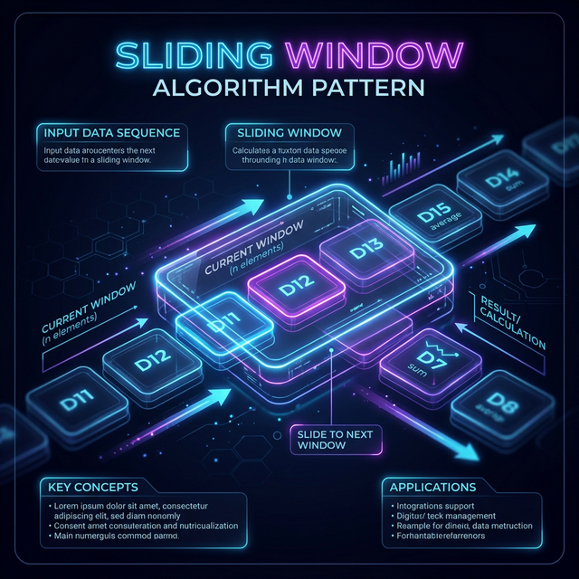

Sliding Window
This pattern is used to perform a specific operation on a specific window size of a given array or linked list. The power of this pattern lies in its ability to convert nested loops (O(N²)) into a single loop (O(N)).
🧠 Mental Model
Maintain a moving window of valid elements. The right pointer expands the window to explore new elements, while the left pointer shrinks it when the window becomes invalid.
- "Contiguous subarray or substring"
- "Maximum/Minimum sum of size K"
- "Longest/Shortest substring with K distinct characters"
Reasoning: Brute Force to Optimized
Check every possible contiguous subarray using nested loops.
Time: O(N²)
Consecutive subarrays overlap heavily. Re-calculating the sum/state for the overlapping part is redundant.
Maintain a sliding window. Add the new element entering the window and remove the old element leaving the window.
Time: O(N)
How it Works (Step-by-Step)
- Initialize two pointers (
leftandright) at the start of the data structure. - Expand the window by moving the
rightpointer and consuming elements. - Shrink the window by moving the
leftpointer if the window condition is violated (e.g., exceeds sum K). - Record the result (max length, sum, etc.) at each valid window state.

Common Edge Cases
- Empty Input: Ensure the window handles
len(arr) == 0. - Window Size K > Array Length: Handle base cases where
kis larger than the input. - Negative Numbers: Standard sliding window often assumes positive numbers; be careful if negative values are present.
If the array contains negative numbers and you are looking for a target sum. Negative numbers break the monotonic property of the window (expanding the window doesn't guarantee the sum will increase). Use Prefix Sum instead.
Example problem: Subarray Sum Equals K
The Universal Masterclass Template
def sliding_window(nums, k):
left = 0
best_result = 0 # or float('inf') for finding minimums
window_state = 0 # This could be a sum, a hash map of character counts, etc.
for right in range(len(nums)):
# 1. Add the element at 'right' to your window state
window_state += nums[right]
# 2. Check if the window is INVALID. If so, shrink from the left until it's valid again.
while window_is_invalid(window_state, k):
# Remove the element at 'left' from your window state
window_state -= nums[left]
left += 1 # Shrink the window
# 3. The window is now valid. Update your best result.
best_result = max(best_result, right - left + 1) # Example: tracking max length
return best_resultRelevant Blind 75 Problems
Walkthrough: Longest Substring Without Repeating
Input: 'abcabcbb' Step 1: window='a', max=1 Step 2: window='ab', max=2 Step 3: window='abc', max=3 Step 4: hit 'a', window becomes 'bca', max=3
⚠️ Common Interview Mistakes
- Forgetting to shrink the window completely when invalid.
- Updating the global maximum/minimum state at the wrong time (before vs after shrinking).